犬卒塔婆というものをご存じだろうか？
二股に別れた枝の側面を削いで墓地や寺院や辻などに供えるもので、ザガマタとか畜生塔婆などとも呼ばれている。
その分布域は千葉県と茨城県が中心だ。
何やら民間信仰独自の呪術的な雰囲気が漂う不思議な佇まいに魅力を感じ、今回改めて集中的に見ることにした。
最初に訪れたのは印西市竹袋の墓地。
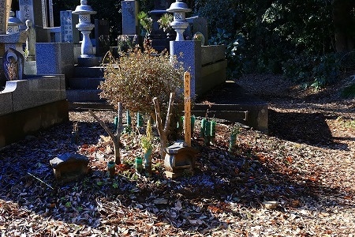
その一角に犬卒塔婆が立っていた。
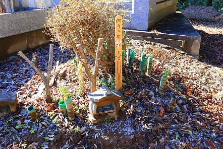
この
Y字の木が犬卒塔婆である。
見たことない方にしてみればなんのこっちゃ、と思われるかもしれないが、この木の正面側の表面が削がれていて、そこに梵字などが書かれているのだ。
残念ながらここの犬卒塔婆は奉納されてから年月が経っているようで詳しい文言は確認できなかった。
隣に立っている板状の卒塔婆には
経
白
如 一
是 切
畜 畜
生 生
発 應
菩 心
提 念
心 口
言
右
為
畜
犬
等
得
（？）
…とあった。
また裏側には
平
竹 成
袋 廿
女 九
人 年
講 八
中 月
十
七
日
とあった。
この犬卒塔婆というものは各集落の
女人講が中心となって奉納するもので、犬の供養という意味合いと同時に、
安産を祈願するものなのだ。
犬はお産が軽いからそれにあやかろう、という事なのだろう。
興味深いのは女人講がその信仰の担い手であるという事だ。つまり女性による自発的な信仰と考えられる。
次に訪れたのは印西市松虫の、松虫寺。
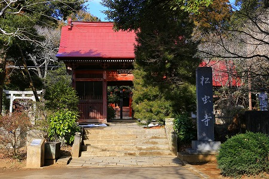
その門前に犬卒塔婆があるという。
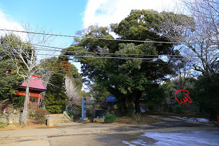
チョット見難いが、右下にあるのですよ。
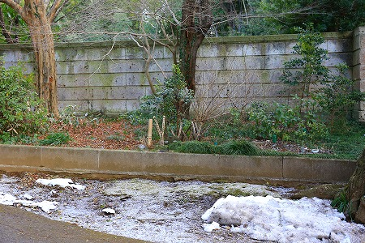
ほら、ね。
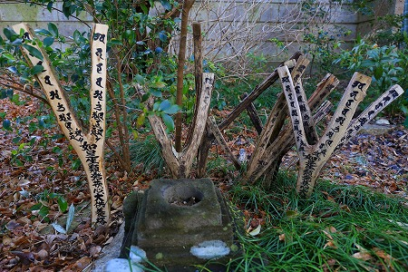
先ほどの竹袋もそうだったが、複数の犬卒塔婆が奉納されている。
これは年に一度奉納されているからだろう。
決して複数の人達が奉納するのではなく、あくまでも女人講として年に一度奉納しているようだ。
比較的状態が良いので文言が良く見える。
如
是
生
類
発
芯
犬
供
養
塔
とある。
それにしてもＹ字の枝を見事に裂いているなあ。
どうやって削っているんだろうか。
因みに犬卒塔婆に用いられる木は白膠木（ヌルデ）の木が多いという。
これは赤ん坊がヌル〜っと出てくるように、という駄洒落からだという。
また実が割れてバカっと出てくるようにという意味で栗の木を使用することもあるという。
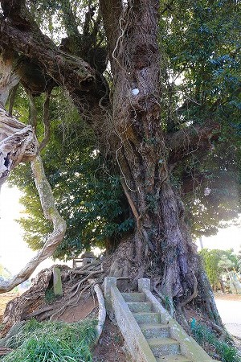
松虫寺の近くには不思議な巨木があった。
何かを祀ってあるのだろうが、わざわざ階段を設けてあるのが面白かったです…。
お次は印西市岩戸の広済寺。
ここの参道にも犬卒塔婆が奉納されていた。
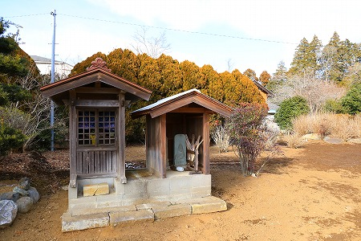
小さな祠の中を覗くと…
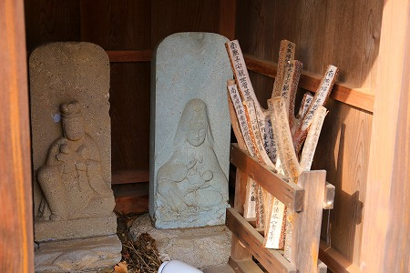
おお、ありました。
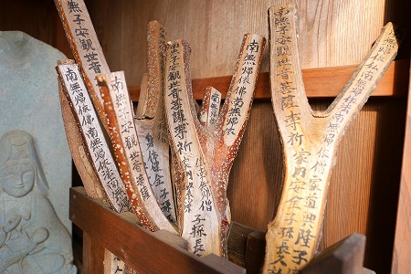
祠の中なので状態は非常に良い。
ちなみにこの祠は平成24年に建てられたので、犬卒塔婆もそれ以降に奉納されたものと考えられる。
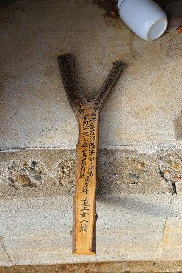
南 南
無 無
子 帰
安 依
観 仏
世 南
音 無
菩 帰
薩 依
専 法
祈
家 家
内 道
安 興
全 隆
子 子
孫 安
長 隠
久 諸
縁
吉
祥
同
上
女
人
講
…とある。
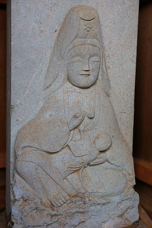
この祠は子安観音堂で、授乳している観音サマの石像が安置されていた。
お次は佐倉市小竹。
ニュータウンのユーカリが丘線の女子大駅にもほど近い。
それにしてもこの路線って何で駅の名前がぞんざいなんだろう？
女子大とか公園とか中学校とか…バス停だってもう少し具体的じゃないか？
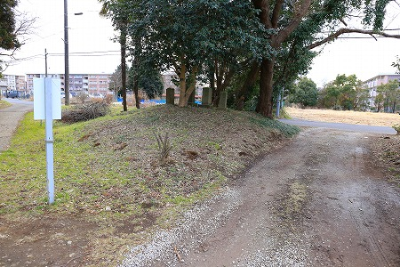
で、そんな団地近くの三叉路に犬卒塔婆がひっそりと置かれていた。
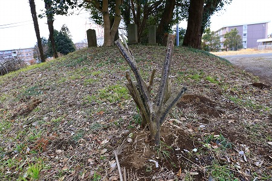
三叉路、と言うよりはふたつの道と獣道のような道に囲まれた三角地だ。
確認しなかったが何らかの石碑（辻なので馬頭観音か道祖神か庚申あたりだろうか）も立っており、特別な場所になっている。
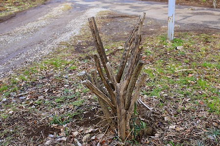
犬卒塔婆は古いものが一番手前で、新しいモノを後ろに刺しているようだ。
なんだかエグザイルのチューチュートレインみたいっすね。
次は白井市木の薬師堂の前。
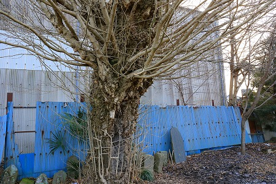
大きな銀杏の木の周辺には石碑が並んでいる。
その中に犬卒塔婆が混ざっているのだ。
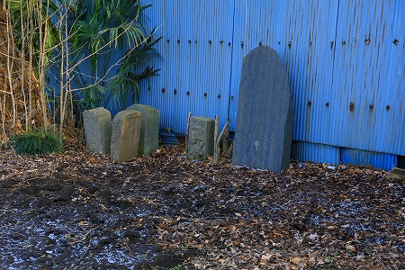
銀杏の木というものは豊穣の象徴でもあり、特に枝から乳房状の瘤がある銀杏の木は授乳に御利益があるとされている。
そのような銀杏の木と安産を祈願する犬卒塔婆が並んでいるのは偶然ではないのかもしれない。
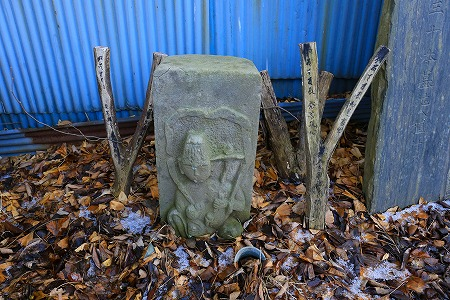
一緒に建っているのは如意輪観音だろうか。
ここの犬卒塔婆も最近は奉納されていないようだ。
…と、まあこんな按配で千葉県内で犬卒塔婆を5箇所見てきたわけだが、共通している点とそうでない点が見受けられた。
共通項としては女人講や十九夜講といった講が犬卒塔婆の担い手となっている点。
それとY字の枝の表面を削いで何らかの文言を書き入れている点。
あとコレ意外と重要な気がするんですけど、古い犬卒塔婆をそのままにして新しい犬卒塔婆を奉納するのも共通してましたね。
次に共通していない点。まずは設置場所。お寺、墓、辻、とそれなりに何らかの理由はありそうだが、案外ばらけていた。
ここ以外でも過去に見かけたことがあった犬塔婆は畑の一画や普通の路傍といった場所的にあまり特徴のないような所でも見かけたことがあった。
もしかしたらそれらはリアルに死んだ飼い犬の墓だったのかも知れない。
あと、犬卒塔婆に書かれていた文言も共通ではなかった。
これは講が属する寺院の僧侶に書いてもらったと想像するが、共通の文言がないということは
この信仰自体があまり強固ではない事を示している。
そのわりには千葉から茨城にかけて
信仰圏が広いのが面白い。
ま、ひとまず気が付いたことだけをつらつらと書き留めておきつつ、不思議な習俗があるということだけお知らせしておこうかな、という次第です…。
…と思っていたら、面白いニュースが飛び込んできた。
つくば市に
石で出来た犬卒塔婆があるというのだ！
情報ソースはいつも愛読している日本の石仏という雑誌。
というわけで早速つくば市に出陣！
ついでに一応基本的な犬卒塔婆も抑えておくことに。
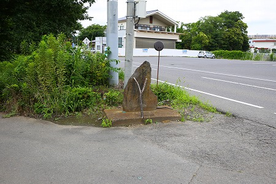
つくばといえば大学や研究施設が並ぶ人工都市、と思われる方も多いだろう。
実際そうなのだが、チョット大通りを逸れるとそこには昔ながらのザ茨城っぽい農村風景が姿を現す。
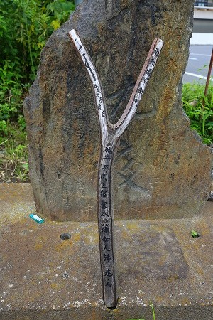
つくば駅からそう遠くない苅間という場所に建つ犬卒塔婆。
後には十九夜の石碑が建つ。
十九夜とは月待講のひとつで、毎月十九夜月の日に女性たちが集まって子宝や安産を祈願する集まりの事。
まあ、今でいう女子会みたいなものだろうか。
ここ茨城でも犬卒塔婆担い手は女性なのだ。
コンクリート製の石碑の台座には小さな窪みがあり、そこに犬卒塔婆をセットするようになっている。
確かに立てかけておくよりは安定するね。
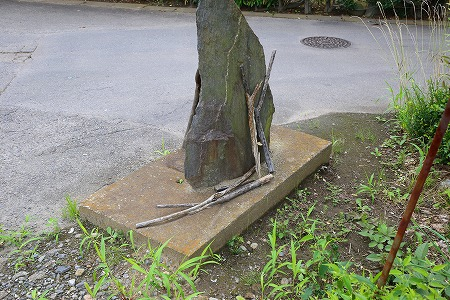
石碑の後ろには過去に奉納された犬卒塔婆が置かれていた。
古い犬卒塔婆は崩れて原型を成していない。なぜそこまでして古い犬卒塔婆を保存しておく意味があるのだろう？謎だ。
…というわけで、お目当ての世にも珍しい石の犬卒塔婆へ。
場所はつくば市街の北、前野という在の辻にあった。
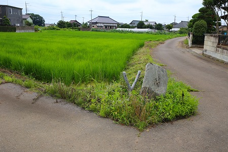
石碑の後ろに隠れるように建つ犬卒塔婆は紛れもなく石で出来ていた。
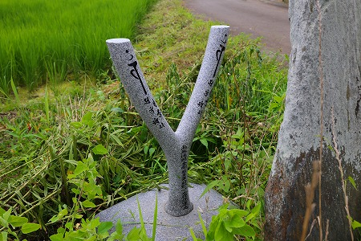
ソースである「日本の石仏」誌の投稿記事によると、この在では元々十九夜講の女性たちが犬卒塔婆を奉納していたのだが、近年は集まる人たちも少なくなり、講自体が休止することになってしまったのだという。
その際、皆で持ち寄った講費の残りでこの犬卒塔婆を作ったのだとか。
つまり
木の犬卒塔婆の代わりに永遠に残るであろう石の犬卒塔婆を作ったというわけ。
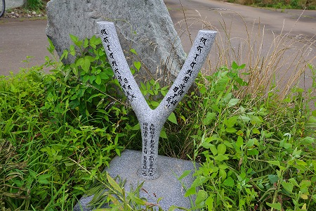
これは私見だが、屋外に置かれる木や藁で出来た奉納物というものは基本的に
朽ちてなくなる事を想定しているはずである。
村境の藁人形や道切の藁細工と同様、朽ちてそのマジカルな効力が失効するため、毎年新しい信仰装置を供え、有効期間を一年延長させるのだ。
逆に言えば毎年作り変えられる奉納物というのは、今迄の災厄を消し去るために古い奉納物は廃棄する必要がある筈なのである。
ところが、この犬供養の習俗はどうだろう？
古い犬卒塔婆を廃棄せずにそのまま新しい犬卒塔婆と一緒に置いておく、場合によっては古い犬卒塔婆に遠慮するかのように後ろに立てる。
古い卒塔婆を廃棄せずに新しい卒塔婆を足しっぱなしの犬卒塔婆。
もしかしたらどんどん増え続ける事を善しとする育産系の祈願だからこそなのかも知れない。
ちなみにこの前野という場所、みんな大好き
高エネルギー加速器研究機構（KEK)の真裏にある。
電子や陽子を光速で加速する世界最先端の施設のすぐ近くで最先端の犬卒塔婆が生まれていたのだ。さすがつくば！